The GNU DataExplorer is a tool to gather, view and analyze data which comes from devices with a serial data port or other like CSV-file or USB port. The application itself runs on several operating system with 32 or 64 bit processor (GNU/Linux, Windows, Mac OS) and is enabled for national language support. Actual English and German is packaged. Devices might be data logger, measurement devices, charging devices or similar.
A fundamental idea for the development is the system comprehensive thought. For none Windows user the same functionality should be made available as it is today by using LogView for Windows. This is the reason to base the implementation on Java using the free available RXTXcomm library, for the serial communication and the eclipse SWT library for the graphical user interface. For both libraries a native interface for Windows, GNU/Linux and Mac OS is available. For development the eclipse IDE (integrated development environment) together with the Java 6 runtime is used.
What is the naming for serial interfaces on different operating
systems:
In fundamental there are two reasons. The software follows the freedom of software idea. Using GPL will makes the source code available for every one. Therefore the GNU DataExplorer makes all interfaces for device communication and the data model is freely available. This will finally gives everybody the power to enhance the applications (for own needs) with new functionality, add new devices and fix errors. The device specific components are separate modules and are bind dynamically during runtime (plug-in). This enables developer to develop the device plug-ins disconnected from the main application. There is a sample implementation which can be used as entry point. To implement a device plug-in three facets are touched: the device itself, knowledge how to use the device and a communication specification (of course programming knowledge).
A Java applications lives within extra for it started "Virtual Machine" (VM), this runtime environment is as fist approximation equal for all different system platforms. Therefore a Java application can be executed everywhere, where a Java runtime exist. The VM provides the available memory. Different to an application written in C a Java application can only use the memory provided by the JVM what is different to the system wide provided memory. This means while starting the JVM for an Java application the memory consumption limits must be provide (-Xms/-Xmx). If no values are provided, a maximum value of 128 Mbyte is used as default. A VM sounds like a system sandbox where there is no possibility to break through barriers. Would this the truth, there would probably no serial communication and no graphics library. Prior to announcement of the just in time compilers (JIT) Java applications are slow and came with its own visualization skin. Actual Java applications are very close to applications written in other programming languages in viewpoint of comfort and speed. Using the "Java Native Interface" it is possible to communicate direct with hardware device drivers. In this area mostly C applications are used to execute this job. This is the case with RXTXcomm and as well SWT. Using Java a very big number of freely available libraries are available as well as libraries provided by GPL license. All of his can be used in commercial applications as well.
HINT: Please do not use an installation path containing special characters like mutated vowel. Java use as standard UTF-8 character encoding, while translating special characters can lead into an error situation.
Which directories are created during installation are described in the README file. More important are the directories used during runtime of the application storing settings, log files and graphics templates.
As base directory the application is using:
At this start point for directories the following is used and created
This should enough as overview. Later in this document we will dive deeper in details.
How get the data organized which contains the measurement values. A root folder or directory needs to be defined (refer to preferences dialog), underneath each used device get its own data files folder. The device folder are the same as the chosen device names. In addition folder gets created for each created object. While saving the data an file name proposal according the configuration in preferences dialog will be displayed. As example Date_Object_Name.osd. Is there an relation of the saved to an object, an object is selected while saving, an file link gets created in the object folder pointing to the file in the device folder. File links only needs a few bytes disk space, since its only a relation to the data file. There is no duplication of data files. While opening object related files only this object files are visible. As example you will find the battery of object XY when its last time charged. A simple folder structure should give an better overview :

Hint: Since file links are operating system specific ther is a capability to clean up and re-create all file links (refer to preferences dialog). Moving your data to an different operating system is easy now.
In the title bar of the application the name of the application itself and if applicable the loaded file name, the associated device name and the communication port name is displayed. As usual for this type of application a menu bar as well as a tool bar is available. The central area is build from windows reachable by tabs. This area will present the data in several form. The graphical view which presents the data using curves is the real main view. All other windows are detail views in other representation form.
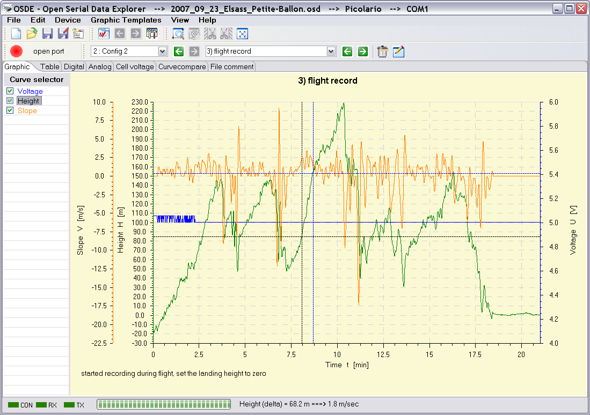At the bottom there is a status bar to display serial communication status, like connected, receiving and transmitting. Aside the communication port status a progress bar is placed to show progress of long therm operations. The rest of this status area is used to display warning messages or measurement results.
The settings dialog is used to configure:
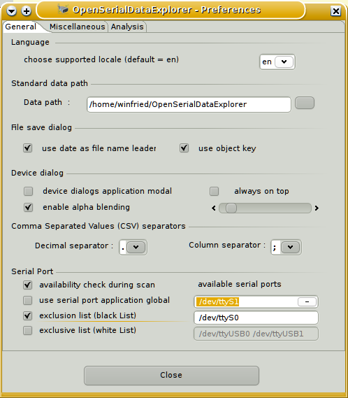
Pushing the buttons will create a desktop launcher icon or remove it from desktop. The other two buttons enable the DataExplorer MIME type registration to associate the file endings *.osd and *.lov or remove this registration.
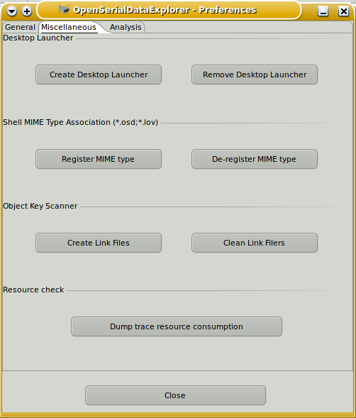
The button "Create Link Files" will scan all OSD files under the configured folder and create all missing object directories as well as the associating link files. The button "Clean Link File" will delete object related link files but not the object description files nor the object related directories. This function helps to move data files to different system/platform or for backup purpose.
Using the analyze tab only adjustments for problem analysis can be found. After a program failure function a trace log entry should appear which may help to find the reason for it appearance. Pay attention, modifying trace log level away from INFO will result in slowed down execution an may lead in unknown side effects. So adjust this values using this knowledge. The adjustments are scaled in detail level,
The below described part allows to configure the log level class based. To keep the log file content small do not adjust the log level above FINE. Otherwise the amount of log statements is very high.
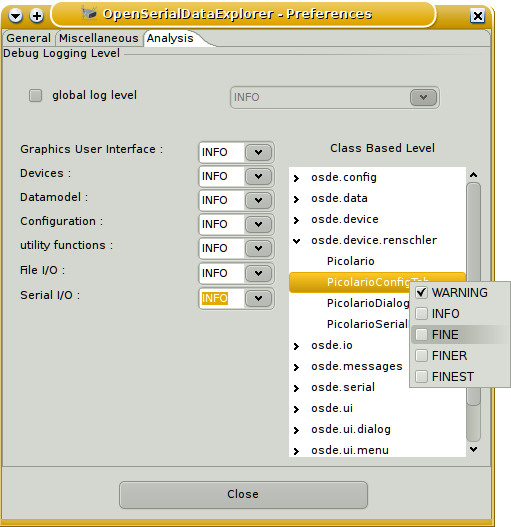
The class based log level allows to set a logging level for selected class(es) which reduce the amount of trace statements and helps analyzing class centric. A context menu enables the log level selection. Closing the settings dialog will activate the adjusted trace level.
In every case only three level of trace log files are written with a limited size. The files in this rolled approach will over write after a certain amount of statements.
Hint: In case of error please have a look into the trace log files this will give help indicators to fix the problem (refer to Used Directories).
Using the device selection dialog the devices are chosen which are available for the application. The device selection and port overview all devices are listed which are found by available device properties XML file in the "Devices" directory.

The selection of the active device will be done with the "Preferences" tab.

The selection of the active device can be done in several places on this tab. First place is the combo box direct above the device picture or with the slider at right hand side of the combo. The picture of the just selected device will be shown. Additional information related to the device is shown at the right hand side of the picture. Direct underneath this device info two selections are available to configure device specific behavior regarding device dialog and communication port.
Hint : Another possibility selecting the active device is using the next-/previous- device buttons in the tool bar.
Underneath the device picture the serial port must be selected. Is there only one serial port available at the current system this port will be selected for communication purpose automatically. The pictures below showing a port selection with COM4 using a Windows system and a port of a serial to USB adapter of a GNU/Linux system /dev/ttyUSB0.


With the “visualization preferences” group the visibility of some application tabs can be configured. Very small systems might be slowed down if to many data has to be updated while live data gathering.


The check boxes in the middle, Digital and Analog, are used mainly for live data measurements and have less sense for devices without this capability. If a device does not have live data capability or data are red from file the end values of the curve are displayed. The visualization of single cell voltages makes only sense for device with the capability to show this, mainly Lithium battery charger or balancer. Check boxes in the lower section there are more device specific and can only be checked by changing the device configuration files.

At the lower area the serial communication parameters are displayed without the possibility to change it. Required changes can only be done by editing the device properties XML directly.
The menu bar make all elements available to manage the application. The tool bar enable the most often used elements using icons to make it more intuitive.
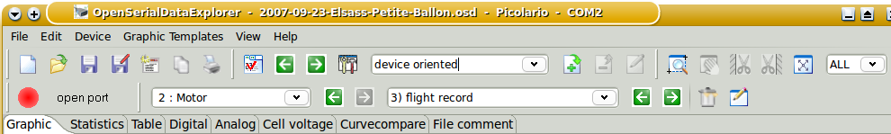
From the file menu all action are triggered with a file as base 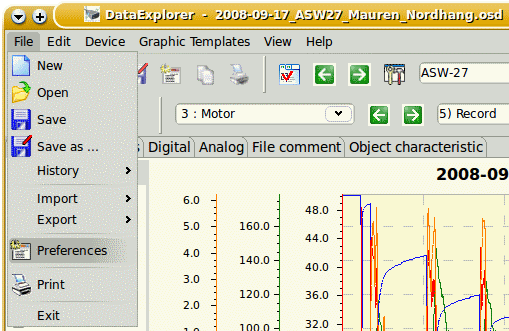
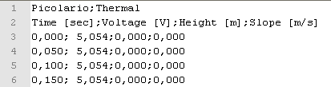 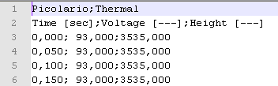
Some device offers additional data export capability, example KML files generated from GPS data.Hint : Absolute during CSV export means the same form as displayed in the table view. Raw means the data are equivalent to the data red from the device. While reading raw data the values are adapted if required according the device properties file, just as the data would be gathered from the device.
All functions of the file menu are available by the tool bar.
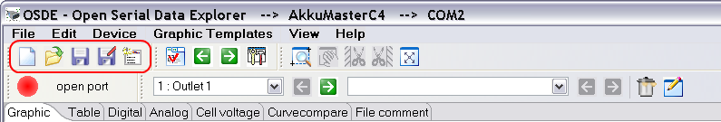
Using the edit menu the graphical data can be zoomed or shifted. The main copy operations into clipboard are located here as well. 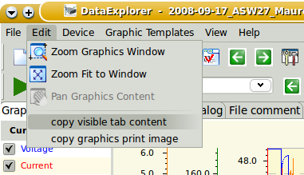
Hint : Copy and change fore- and back-ground color is also available for all tab windows using the context menu (right side mouse button)
All the functions to manipulate the graphical view are available by the tool bar. The tool bar gives additional capability to cut other edges and switch display to the last amount of curve points. Buttons are activated if this operation is permitted.
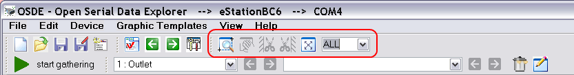
The sample below showing a positioning of transparent area, the area to be cut. A pop-up dialog ask for commitment. This will create an copy of the original data set with the cut edge. The user can decide each case to delete the untouched data set by itself.
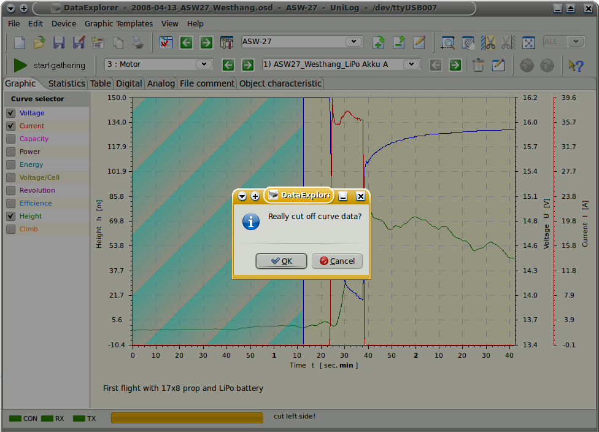
Data sets with cut edge have an under bar character appended to its name. The original data set is still available.
Hint : Data set names may edited after pushing the edit button as documented here.
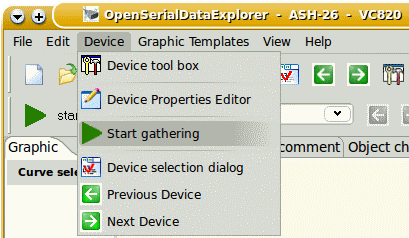 This menu enables device specific operations
All device specific functions are reachable using tool bar buttons.
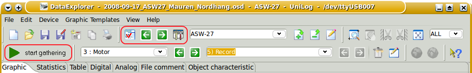
In addition there is a way not to sort your data according devices only, instead you can define and use objects across all devices. Using "device oriented" there is no change at all.
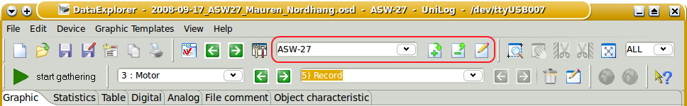
But if chosen or, using the plus sign, create a new object key, a new tab window, Object characteristic, appears. Within this tab it is possible to describe the object, which is actual selected. While selecting an object key the usage of the object key for the actual data set will be queried. Independent of the answer, starting from now, only data files are displayed while opening which contains this object key.
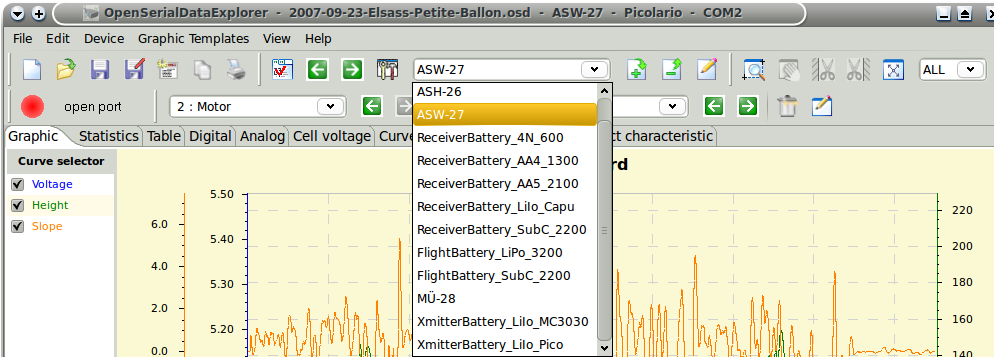
Using this menu graphics templates are managed. Graphics templates contains graphics visualization properties.
If available and applicable a graphics template will applied according the device and channel configuration. Graphics templates contains properties regarding the once adjusted by the context menu of the curve selector, like line color, number format, ... The directory to the graphic template files "GraphicsTemplates" under the application configuration path.

If there is a reasonable configuration displaying all your important curves found, go ahead and save such graphics configuration as default.
Hints : THe apply function of graphics templates overlay with visibility configuration for some devices. If there are some curves switched invisible using the visibility configuration of the certain device, they will not be visible by applying the graphics template. Some devices switch curves invisible automatically in cases where no real data are contained. Devices with visibility configuration are as example CSV2SerialAdapter, WStech Varios, GPS-Logger, NMEA-Adapter, UniLog and some others. Using the visibility configuration dialog such curves can be made visible again even if they do not contain reasonable data.
With this menu the curve selector can be hide or made visible. In addition a graphics header and data set comment can hide or made visible. This can be done using the context menu as well.
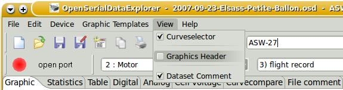 
Using the help menu this text can be reached and the about dialog can be opened to check the version number of this application. Selecting the version check the home page of the DataExplorer can be reached to check if a newer version is available. No personal data are getting transferred to the Internet, only the URL is invoked.
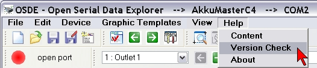 
Depending on the device properties and implementation the left hand side combo box represents a device outlet or a data set configuration. The buttons beside the combo switch to previous or next data outlet channel or configuration if applicable.
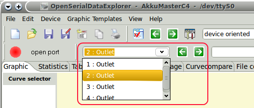
The data set to be displayed can be selected be the other combo box. Analog to the outlet channel/configuration there are buttons to switch to previous or next data set if applicable.
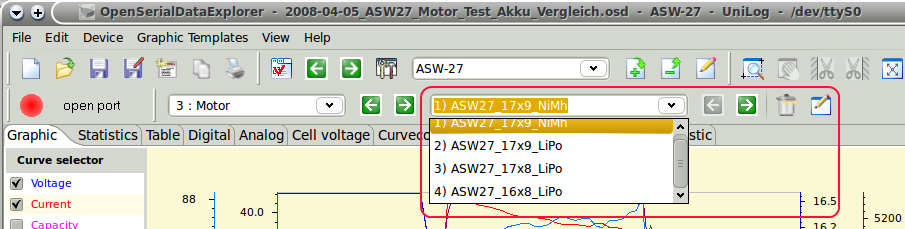
At the right hand side there are buttons to enable data set name editing or deletion. After pushing the edit button the cursor within the data set name field is activated for editing, a hit to enter commits this operations.
If the current displayed record set contains GPS (global position system) data it is possible to export a KML file and launch with such file the Google Earth application. The globe icon will change its visibility to signal launch capability even if the curves from latitude and longitude are not invisible.
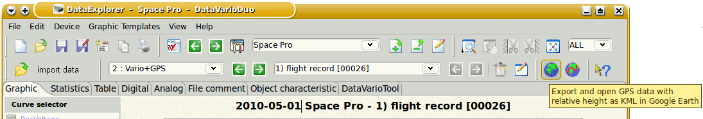
Hint : Temporary files gets generated while using the globe button. This temporary files gets located in the temp folder of the system and get deleted while closing this application. If this files should be saved, change into the temporary folder of your operating system or export the same content using the export functionality (Export - KML 3D or GPX track).
As sample a flight record is displayed. This flight was recorded with an DataVarioDuo with GPS.
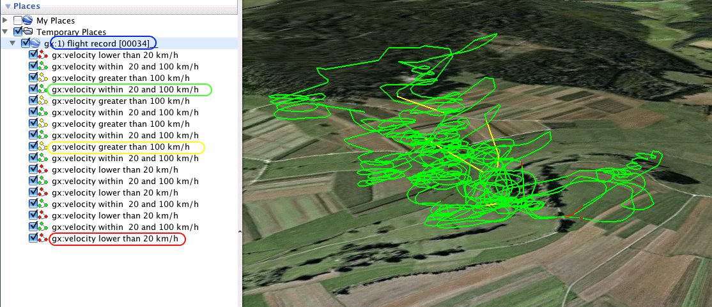
A zoomed part of a flight record would show up like:
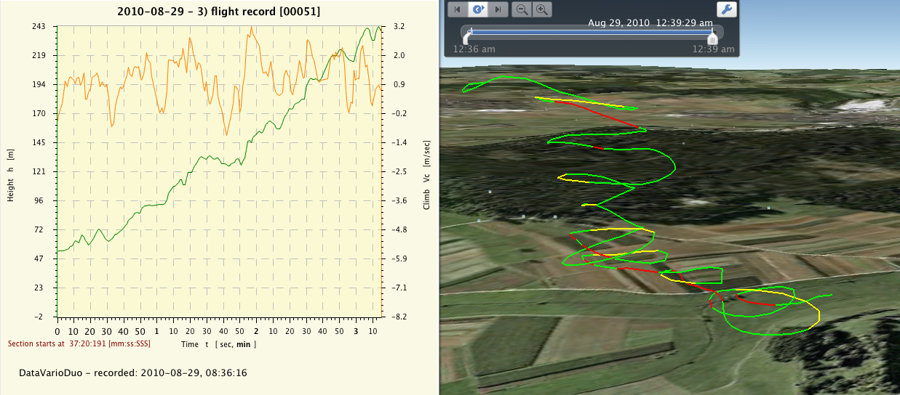
Using the tools button a dialog to configure colors versus velocity can be opened. The left side gets used to configure the colors for the three velocity ranges.
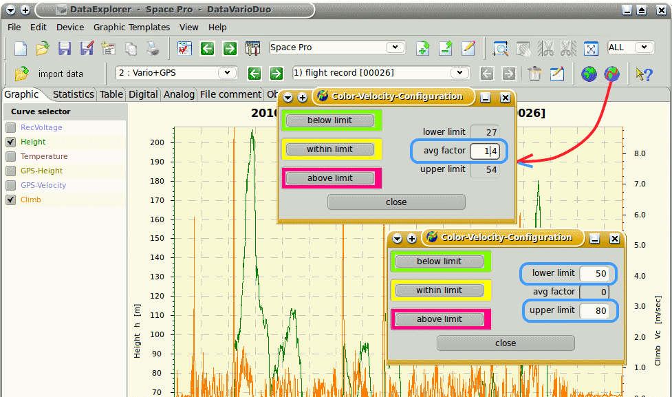
The dialog is displayed twice to make the velocity configuration behavior more clear (blue circled). Is a average factor set to zero, the minumum and maximum velocity fields can be used to configure different values. While the average factor is not equals zero the minimum and maximum values gets calculated.
Hint: It is possible to export GPS data in form of GPX files, which needs to be loaded within Google Earth manually.
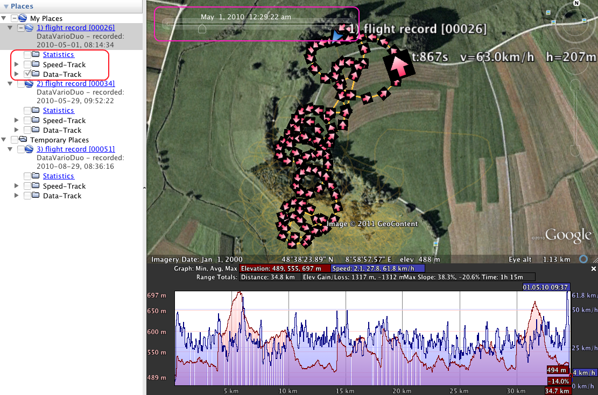
The graphics view represents the real main window of the application. Here the data sets are represented as curves. With checking the individual cure names it will toggle curve visibility (refer to GraphicsTemplates). Many curves displayed might reduce clearness. This is the reason to have this check-box in direct access.
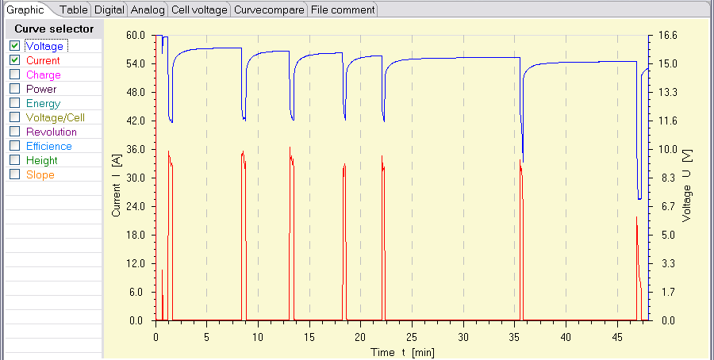
The curve names are colored equal to the curves to see direct relationship. The curve selector represents in this terms the legend and enables visual activation by a mouse click.
Much more configuration possibilities are accessible using the curve selectors context menu. It enable configuration of visibility properties as well as scaling properties.
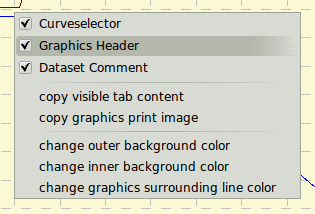
Using the context menu (of each tabulator) it is possible to configure it visualization
 The curve selector
context menu gets activated by selecting a curve name with the right
mouse button. On top of the context menu the name of the selected curve
is written which is in focus. All adjustments and visualization changes
are applied to just this curve.
The curve selector
context menu gets activated by selecting a curve name with the right
mouse button. On top of the context menu the name of the selected curve
is written which is in focus. All adjustments and visualization changes
are applied to just this curve.
Using the context menu Curve visible the curve can made visible or invisible. While the curve is invisible and some properties gets changed it will be visible afterwards. As sample a invisible curve should be measured, the curve gets visible and the measurement point are displayed.
Selecting Curve line color a color selection dialog pops up to chose the curve color. The selected color gets also used drawing the base line of the vertical scale of this particular curve to get easy color match. This color is used to display the digital numbers and the circle base line of the analog display.
Adjusting Curve line width the curve gets differentiated from the others.
Changing the Curve line type will only small change the visibility. Since the most curves has such small difference between data points there are only small impression changes. This has to be tested individually.
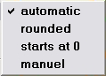 The next block Axis end values manipulates the scales. Automatic uses the real minimum and maximum values of the curve. Rounded, rounds depending of the values in use. The selection of starts at 0 can be used together with “rounded” or “automatic”. The starting point of the scale is set to zero.
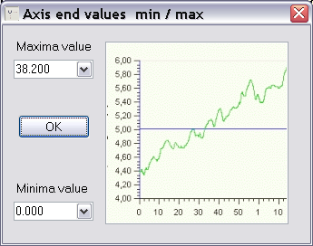 While selecting manual a small dialog gets active to enable adjustment of the end values. Values can not only changed by combo box selection it can be overwritten as well. Pushing the OK button or hit the enter button of the keyboard will close the dialog and make the changes active.
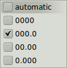 With the menu Axis number format the precision of the displayed values gets adjusted. To many digits might suggest a precision what is not real by means of the measurement device itself. Selecting automatic will adjust this according to the actual displayed value range.
Axis position defines the side where the scale of this measurement is displayed.
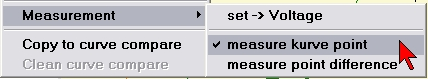 The context menu to adjust grid lines enables displaying vertical, time line and horizontal, for the measurement. The color adjustments enables to leaf the grid lines in background. For vertical grid lines, time line related, the “mod 60” reduces the grid lines to minutes (60 sec) or hours(60 min) depending on the time line scale.
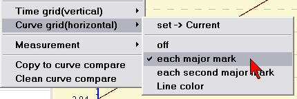 Horizontal grid lines are bound to only one measurement. The curve name used to adjust this will be displayed. Each second will only draw a grid line each second major scale mark.
The context menu Measurement it is possible to measure curve points with snapping crossing hairlines. To do this select the menu measure curve point. To move the hairlines position the mouse pointer direct over the vertical line. While the mouse pointer changes to arrows push the mouse button and move the hairlines to the point of interest. Meanwhile the measured value is displayed in the status bar.
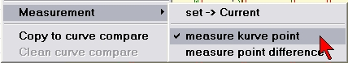
 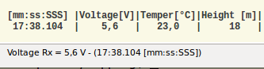
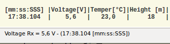
To measure point difference the difference between two point are measured using two different crossed hairlines. The delta value and unit gets displayed in the status bar.

As measurement hairlines black and blue hairlines are displayed. Adjust both as described before to measure a single curve point value. Especially in zoomed curved this makes sense. As additional information the starting point of the zoomed area is displayed.
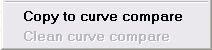 The last sections in the context menu are used to copy selected curves into the compare window Copy to curve compare. The last entry allows to clean the curve compare view by selecting Clean curve compare. This entry gets active when at least one curve is within this area.
Hint : The actual release allows comparing curves of same measurement unit, like measurements from a battery tken over the year. It is senseless to compare voltage with height as example. In case of none matching curves the application will display a warning message.
If there are curves of similar type an extra selectable entry within the curve-selector will be displayed. Selecting this entry the scales of the curves will be merged while synchronizing the end values. As sample voltage curves of Lithium cells are named. The comparison of the two following screen shots should make this more clear.
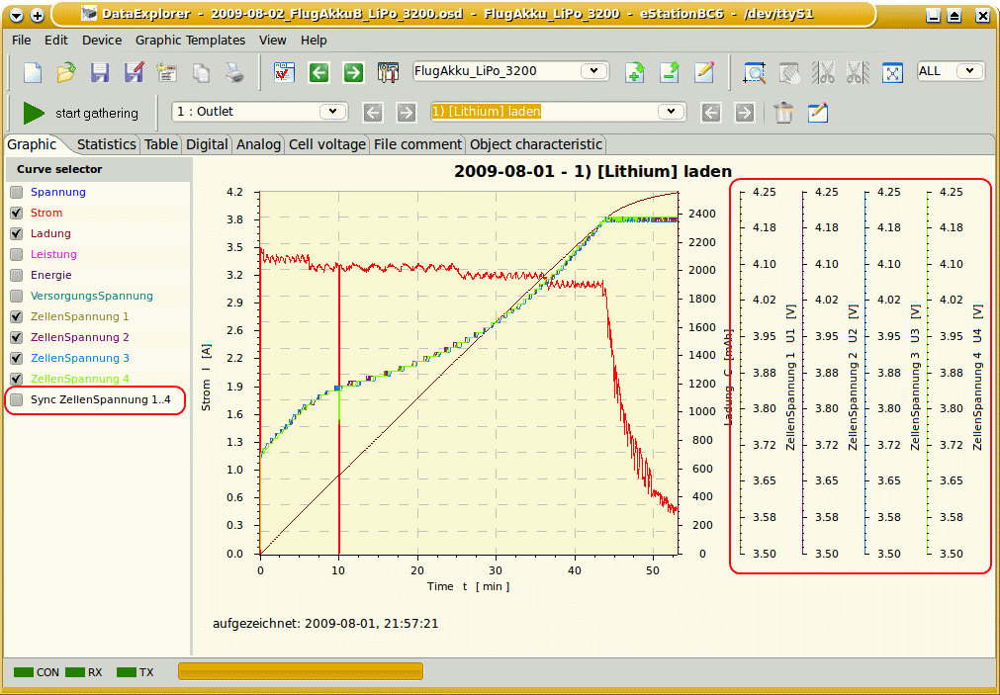
This will make more room for the curve display itself and the minimum and maximum values are the same. Through this the curves are easy comparable and a manual adjustment using the context menu is obsolete.
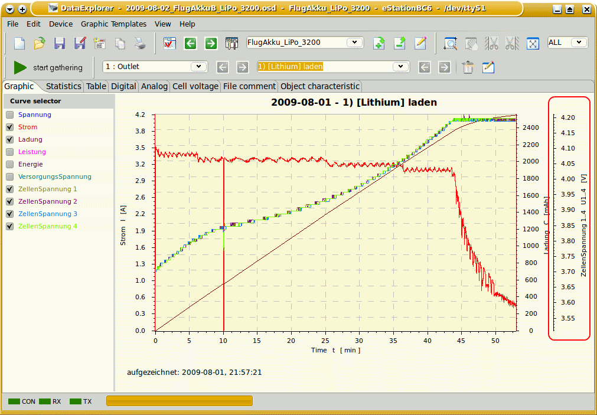
Hint : The synchronization of curves needs to be configured using the device properties editor (refer to measurement properties).

 Activating zoom function
changes the mouse pointer to a cross hair. Pushing the left mouse button
defines a corner of the area to be zoomed. While keep the mouse button
pushed and move the cursor a rectangle gets visible which defines, after
releasing the mouse button, the area to be zoomed.
Activating zoom function
changes the mouse pointer to a cross hair. Pushing the left mouse button
defines a corner of the area to be zoomed. While keep the mouse button
pushed and move the cursor a rectangle gets visible which defines, after
releasing the mouse button, the area to be zoomed.
Hint : If its required to zoom only in one direction the start and end corners can be positioned outside the curve client area. While a section is zoomed it is possible to zoom another section again.
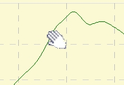< /P>
The pan mode changes the mouse pointer into a hand. While keep the mouse button pushed the curves can be moved.
Reset the zoomed section using the fit to window function.
To display a zoomed section of the last measured values, while gathering data, a pull down menu can be used to adjust the size of measurement points to be used. The resulting view is similar to an oscilloscope.
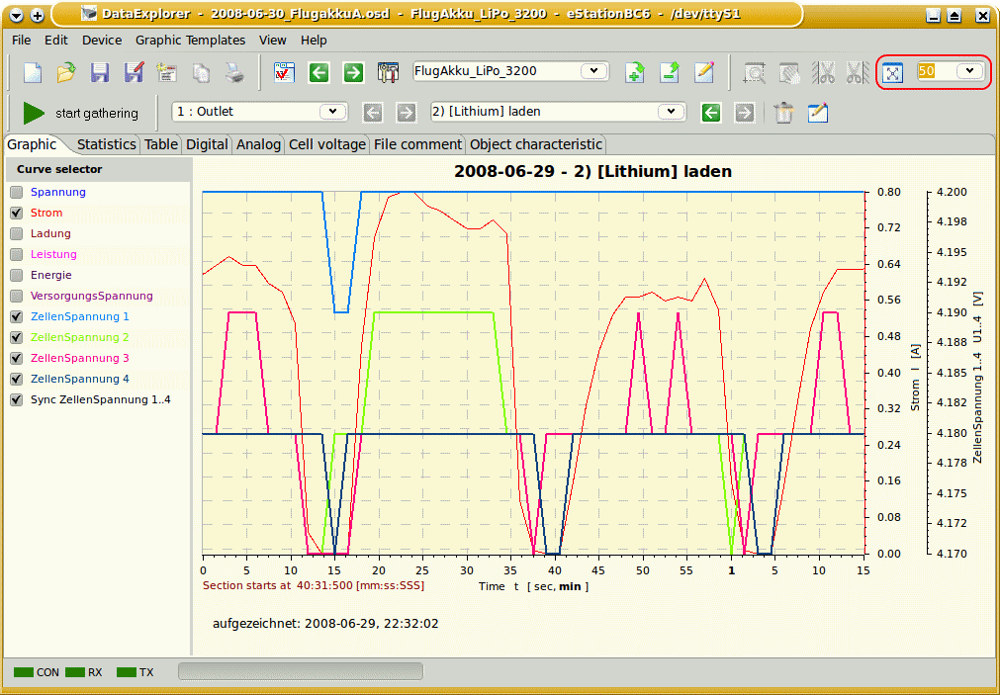
At the menu tool bar the pull down is marked up which just show a selection of the last 50 measurement points to be displayed. Below the time scale the time value of the masking time frame will be displayed. This gives an overview about the total time consummation of the measurement. The sample showing four balanced voltage curves of Lithium cells.
In opposite the Cell Voltage Window displays only the last actual measurement.
The statistics window shows statistic values for all measurements which can be displayed graphically. The device properties file hold all configuration required to calculate statistic values. Configure a trigger will enable to reference all statistic calculation to the measurement point within. In addition a trigger will enable to summarize all maximal values within the trigger area. This is shown in the sample screen shot below by height. Declaring a comment for each line of measurement it is possible to make clear referencing trigger.
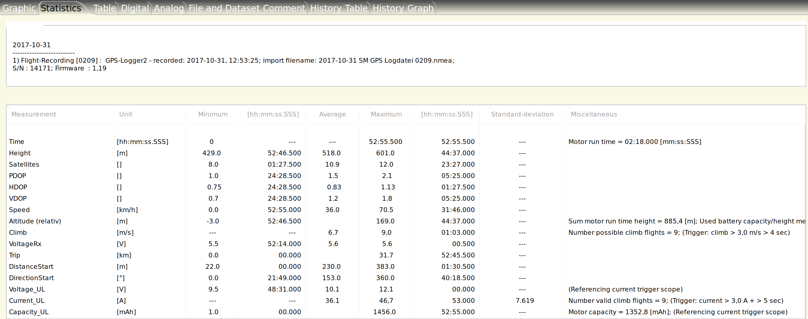
Should the statistics configuration being adapted for some case the DevicePropertiesEditor must be used called from menu bar or as stand alone application.
The table is showing all data even if a curve is invisible. Depending on the amount of data the size of the table can be real big.
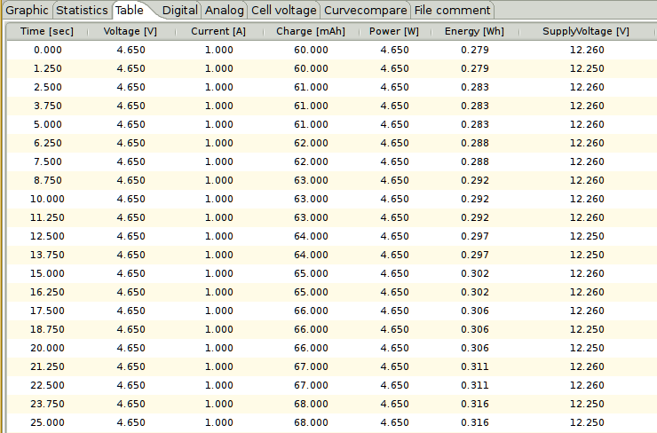
Big amount of data making the table unclear. This is the reason to have the capability to disable this calculation individual for each device (visibility configuration).
The digital view should be set to display actual measurement values during data being captured. For example a charger will query every few seconds a new measurement, this can be displayed and with the big letters its easy to read. The color of the numbers match the color which is adjusted in graphics view.
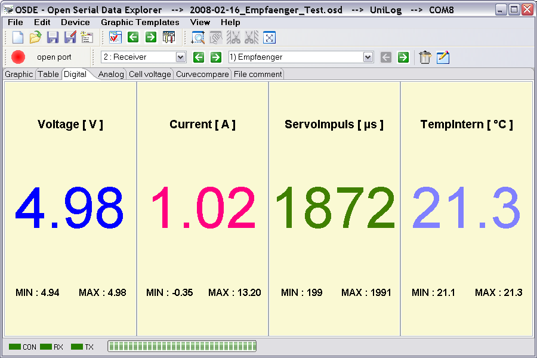
As mentioned no calculation are done only the measured values are displayed. The precision of the values match the adjustment of the precision of the graphics view.
This view will update its values only while capturing live data. So it is possible to deactivate this tabulator if this seams not required for this particular device (refer to desktop configuration).
Hint : Displayed values represent active and visible measurements from graphics context menu, the same precision is used as configured.
Similar to the digital view the analog view displays active measurements selected in the graphics view curve selector context menu. The screen shot below is showing the same measurement as shown for the digital view to make it comparable. The color of the scale circle matches the color of the measurement chosen in the graphics view curve selector context menu. To avoid continuous change the end values of the scale are rounded values. The rounding algorithm is the same as the algorithm used if applied to a curve in graphics view.
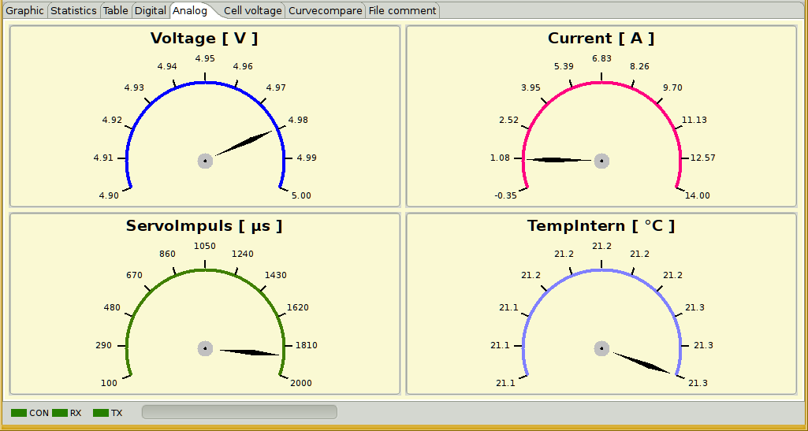
This view will update its values only while capturing live data. So it is possible to deactivate this tabulator if this seams not required for this particular device (refer to desktop configuration).
Hint : Displayed values represent active and visible measurements from graphics context menu, the same precision is used as configured.
The cell voltage view can only be used if the device enables this measurements. In most cases this comes true for Lithium battery cells charger. The voltage values are displayed as value and as bar graph.

If the voltage values of the displayed cells has only a small difference the bar graph will spread to make differences more visible. If a cell voltage is lower than 2.60 Volt or above 4.20 Volt the bar color will change to red. If the cell voltage is between 2.60 and 4.20 Volts the bar is colored yellow. The bar color changes to green if the cell voltage is exact 4.20 Volt.

The pictures should make this more clear.
 It is possible to configure the battery cell type regarding its voltage levels simply by selection for the popular types.
If the connected device gives information about connected Lithium cell types the right selection will be done automatically.
Is this not the case it must be done manually, so it always a good idea to check the cell type selection.
Is a cell type in use which is not direct selectable individual settings can be configured.
The dialog which enables after selecting "individual" shows all predefined cell types limits and enables your own cell type level configuration.
It is possible to configure the battery cell type regarding its voltage levels simply by selection for the popular types.
If the connected device gives information about connected Lithium cell types the right selection will be done automatically.
Is this not the case it must be done manually, so it always a good idea to check the cell type selection.
Is a cell type in use which is not direct selectable individual settings can be configured.
The dialog which enables after selecting "individual" shows all predefined cell types limits and enables your own cell type level configuration.
As the name says the compare windows purpose is to compare curves with each other. The screen shot showing collected curves of an battery over a time period where the battery gets used. Comparison of curves makes only sense if the preconditions of the measurements are almost equal. Only the difference of the curve form regarding charge time and voltage level indicates a damage.
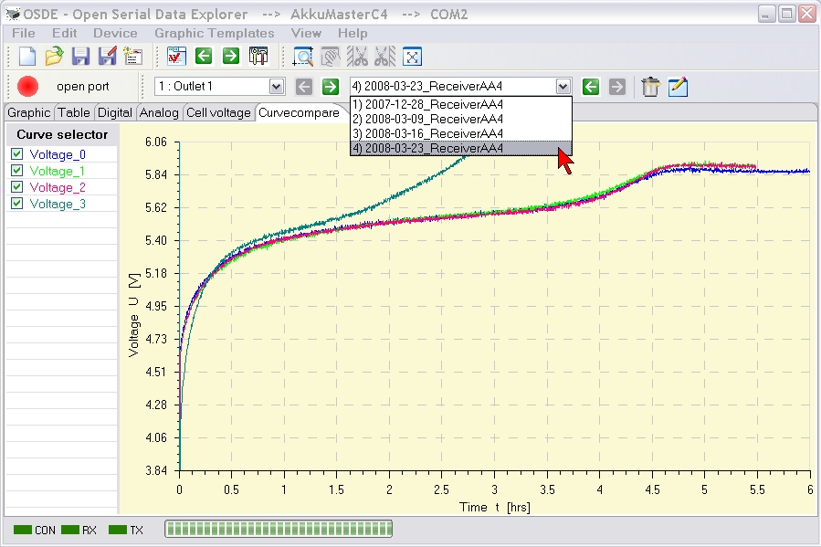
Within the compare window it is possible to zoom and measure, equals to the functions in the graphics view. If grid lines are activated in the compare window this will be restored next time the application is re-started.
Hint : The application will not allow to compare curves with different unit. The curve compare window and its content will not been saved. The tabulator containing the curve compare window will be created while copying the first curve into the curve compare window.

At the file command window it is possible to comment things relevant for all the data sets. As starting point the actual date will be displayed. Initial this is the creation date of the file. This date might be modified of course, if the real data are created or logged at another day.
The file comment window will be viable by selecting its tab. The data set comment will be visible, in a lower table for all data sets part of this file.

The data set comment is visible in graphical view below the graphs, if activated, and can modified here directly. Data and time is displayed in default and can be modified if required. This time mark should be used as indicator at what time this data was created. This comment should be used to write some notes which are data set specific, like events why this is different to others.
Hint : All comments are stored in the data file and might be displayed again.
This display tab window allows to notice object characteristics to be used for related data records. This tab is visible only if an object key is selected in the tool bar.
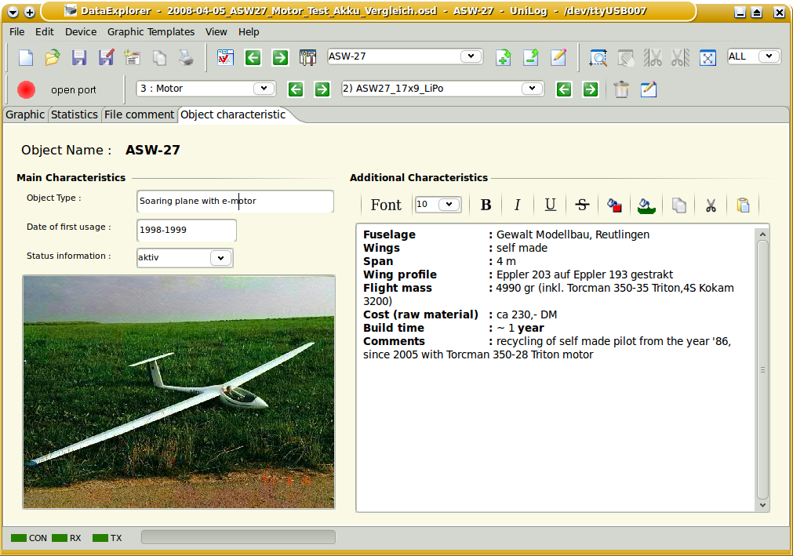
The edited content are saved automatically when the object key changes or the application is closed.
Hint : The object characteristic is related to many devices and data files and will be stored in an extra directory. Data files are still stored in the device directory and contain an object key. In the object directories are only file links pointing to the related device files.
Device properties files are in XML (Extensible Markup Language). Using the XML together with a style sheet (XSD) it is secured to have it validated while reading. If a file is invalid regarding the style sheet it can not be read and will cause an exception. As information material below the actual XSD as picture.
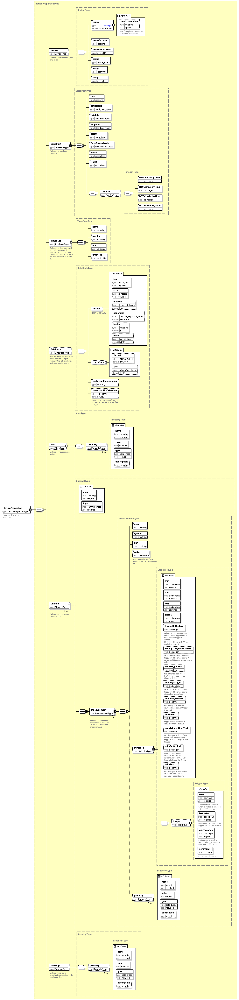
Using the DataExplorer menu bar or started as standalone application it is possible to create new or modify existing device properties files. Doing this the device XML files are touched. 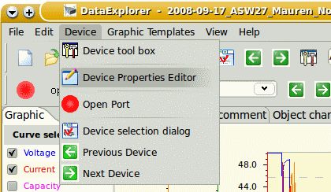
Using the menu bar the device properties file of the actual device will be opened.
Is that the case, manipulating properties will not directly manipulate all properties of an already loaded and displayed data set.
Will the DevicePropertiesEditor started as standalone application, it is possible to type the name of the device directly, if known.
Is the name unknown to the application and can not be find in the devices directory a new device properties file might be created.
 A sample files gets extracted and needs to be adapted as required.
Selecting the button, right hand side, a dialog will opened to enable selection of an existing file.
A sample files gets extracted and needs to be adapted as required.
Selecting the button, right hand side, a dialog will opened to enable selection of an existing file.
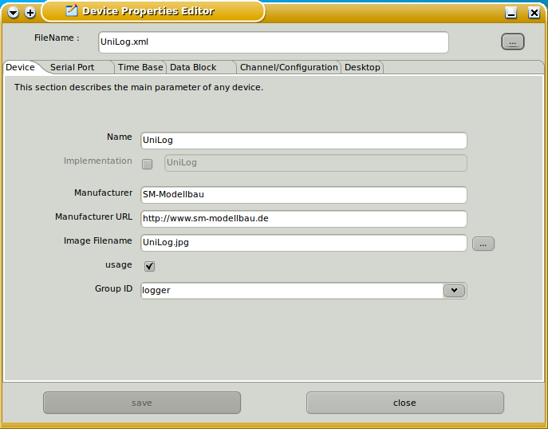
The device tabulator shows how to specify name and manufacturer of an device.
Switching the implementation active, the implementing device class name has to be configured, optional as full qualified including the package. The implementation can always used if an equal device implementation class is already available, and/or if the device name does not fit. As an example the CSV2SerialAdapter has several devices using this implementation, differences exist in the data block specification. As additional example the several copies of the Bantam charger devices can be named, where differences exist in cover design and device name. The captured data should be found under the directory followed the device name, isn't it. 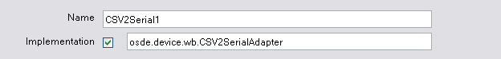 If the 'package' is not given, the 'package' gets calculated starting with "gde.device.", followed by the manufacturer name, converted in lower case and hyphen and blanks eliminated. The default class name can be calculated by removing blanks and hyphen. capital letter are kept.
The image name can directly typed if known and it references an existing within the device plug-in. If the image gets selected by use of the right hand side button and file selection dialog the selected image guest scaled to 225x165 pixel. In addition it is possible to pack the image directly into the referenced plug-in. Modifying the plug-in could only done in the temporary folder where write rights are guaranteed. If this option is chosen the modified plug-in must be copied to the application directory, where the plug-in can be added to the class path. How to do that will be advised in a message box.
Hint : This change might be get lost while updating the application. A backup might be saved somewhere else by your own.
 The serial port gets configured easily by selecting appropriate values from the combo boxes.
The serial port gets configured easily by selecting appropriate values from the combo boxes.
Hint : If timeouts guest specified the implementation must be written to use this values. The description of the serial port is optional due to the fact that some devices don't use it and read simulated serial data from text files. As example the CSV2SerialAdapter devices does not have a serial port specified.
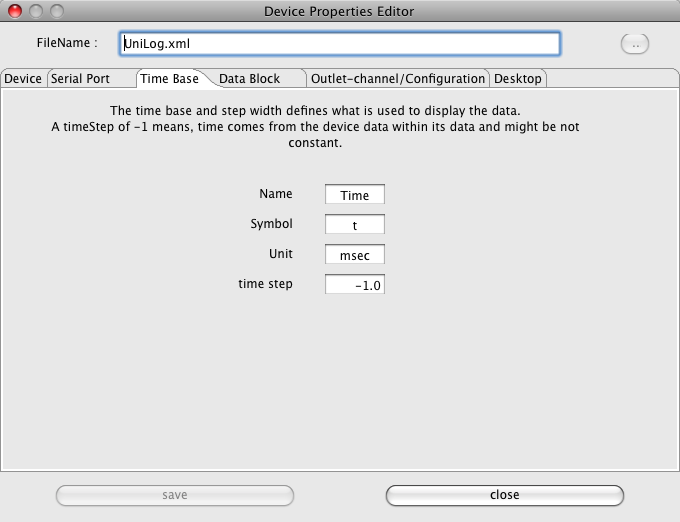 To configure the time base is simple. A value greater than 0 milli seconds as time step between the measurement points is voted as constant time gap. The time step value lower than 0 milli seconds signals that the device gives individual time steps. This must not mean that the time steps might not constant. The implementation for the particular device must handle this situation.
Hint : The UniLog, as example, uses an adjustable but constant time step between measurement points. Therefore the time step is -1 msec. Finally the device implementation must handle the situation and read the time step value for each sequence and use it as constant value for the data.
The next two pictures contrast two different data block configurations. The UniLog configuration describes binary data with a constant length of 24 bytes. Is 24 bytes the maximum and a shorter length as example 20 bytes possible the configuration must point out -24 as value. The data type is BINARY and no separator sign is configurable. Is TEXT chosen as data type additionally configuration parameter must be specified. The file extension, what is used during file selection, as well as the standard data path, will help to select files faster. Both are optional, but help, if data files are delivered by a memory card, like the DataVario from WStech, which will appear with an dedicated path value if inserted into the computer.
Hint : This configuration are optional. Other implementation might use this parameters in a different way.
The state tabulator will describe a sequence number to device states. This description makes sense if a device can use more than one state and data are imported by a text file using the CSV2SerialDataAdapter. Finally the device implementation use the states and match it somehow with the data.
Hint : If text data are imported using the CSV2SerialDataAdapter the state 1 would be charge ($1;1;time;data;..), and state 2 discharge ($1;2;time;data;..) compared to the sample.
The tabulator with the name outlet-channel/configuration is the most complex and the biggest one. Here, as required or desired, the device outlet as a data channel or different configurations gets described. As described two different types of outlet-channel/configurations are available. A charger device with only one outlet to connect one battery at a time has only needs to configure only one outlet-channel/configuration from type outlet. The sample on right hand side just showing this. Underneath the area where the type and the name has to be configured another tabulator describes the individual measurements. The measurement configuration is responsible how the data are finally displayed in the various windows including the unit and the statistic mathematics. Hint : Is the outlet-channel/configuration type is chosen as configuration (TYPE_CONFIG) different configurations could be combined with identical data set. If a copy of an outlet-channel/configuration is necessary it is sense full to complete the measurement configuration which belongs together before do the copy.
Measurements get described with the name, its unit, its symbol and if the measurement is active captured from the device. Non active measurements are calculated (current * voltage). In addition there are optional properties like factor, offset and reduction which influence the view of the (raw) data.
Hint : Are additional properties and/or statistics configuration required, use the context menu to create. After a measurement is completely described by properties and statistics it is possible to copy the complete set into a new one using the + button. Adding a property is simple since there are a lot of prepared once available and only the value needs to be specified.
This statistics sample showing how to select average minimum and maximum as well as how to configure an trigger. A trigger is described by a value and a time to be specified as a limit. All average, minimum, maximum and deviation are related to this trigger now. In addition it is shown how to configure that the time where the trigger is active gets summarized. This might calculate the real motor runtime. It is also possible to count the trigger events.
Hint : It is possible to add comments to the most of trigger or trigger related statistics. This helps to identify which statistic value relates to an adjusted trigger and which not (Statistics Window).
The next sample is showing how a already defined trigger can be used to calculate related statistics data. In the sample, while "sumByTriggerRef" is selected, the height gets summarized over the trigger period only to count the total height by motor runtime. This will help to identify the best propeller to motor adaption in comparison to other combinations. In addition a proportionality gets calculated to show the used battery capacity versus the height during motor runtime. This allows judgments how effective the available power is used up.
Hint : Additional configuration samples can be found in UniLog or DataVario device property files.
At least the description follows about the application visualization. At this point it is initially configured which tabulator is active and visible. Active relates to visibility and calculation time for the content to be displayed within the window behind.
Hint : Initial means that the application device selection dialog itself allows to modify this, refer to Device selection dialog.
The file format (*.osd) is implemented in version 1 and version 2 as plain binary format. To enable extensibility for a long time period the configuration data are key value pairs. This enables the capability to keep some configuration data optional similar to optional XML elements. The read functions will construct at first a HashMap of the key/values and apply only the values of existing keys. All other are default. Measurement data point are stored without any change as integer values. This enable to have all data files structure the same, there is no difference between devices.
The text data format is a standard "Comma Separated Values" CSV-file as it is used by spread sheet applications as well. The alignment of data (values) is common for a lot of battery charger devices. The LogView application also can import this type of data and is named as "OpenFormat". Due to the platform comprehensive approach of the DataExplorer, it is required to make the specification more complete. As example different execution platforms used different new line characters, p.e. Windows <CR><LF> while creating a file. On the other hand it must be secured that files created on different platforms, with specific new line characters, can be interpreted, p.e. GNU/Linux <LF> or Mac <CR>. Refer to the DevicePropertiesEditor data block description. The sample showing the assignment of the values in relation to the text data and how they gets interpreted.
The AkkuMaster C4 device dialog is to be used to view, adjust and
gather data from AkkuMaster discharge and charge processes. It is
possible to configure each outlet independent from the others. A
configuration which overloads the charger is impossible, since the
individual loads are accumulated and the resulting total current will
be displayed.
Note : If a data gathering process is
active, it is not possible to close the dialog. Each outlet channel
may gather data in parallel and can be displayed individual. To
switch between outlets will not been possible if device dialog is
modal adjusted in application preferences.
A lot of hints are available by tool tips of the dialog itself and make this help nearly obsolete. The tool tips are visible by hovering the mouse over the fields of interest.
Afterwards the serial communication is configured using the device selection dialog the device version information is gathered in background while opening the dialog. This may lead into serial communication error, if the configured port can't be opened. The device dialog with the actual EPROM version from manufacturer is shown in picture 1 displaying version information.
After selecting an outlet tab only the two radio buttons are active. Other senseless buttons are disabled for the moment.
Configured process
Such a condition is shown in picture 2.
If, as usual, the charge/discharge process is started at the device, the selection of “Gather data only” the displayed process parameters are updated. Additionally the “Start” button gets activated to enable the start of the gathering process (picture 3).
After the start button is pushed all the graphics displays are updated by the gathering cycle. The stop button gets activated to enable stopping of the process for some cases. New data sets get created while the device switch between charge and discharge. The gathering process stops automatically if the device signals no activity anymore.
Note : Stopping the data gathering process will also stop the running process of the connected device for safety reasons!
While using “Configured process” the data configuring the
future process are updated with the actual values depending the the
current adjusted values of the selected outlet. Afterwards you can
modify the values according your choice. Since the program must be
loaded into the devices EPROM before it can be executed the adjusted
values are written into the selected memory.
Note : Since it is not possible to query data for the selected memory, I prefer to do all program configuration direct at the device and use “Data gather only” for data gathering.
If a memory index will be modified from which is red from the
device the background of the combo box is colored the make this
change more visible. Such a situation is shown in picture below.
To close the device dialog is only possible while no gathering processes are active. While closing the dialog the serial port is closed as well.
The device dialog is used to configure the visualization of the displayed data. Using the "open file" button a file selection dialog enable to open new files while applying the current visible visualization configuration. The dialog is build up dynamically and might be different for each device. As example two different dialogs are shown:

Hint: The configured visualization profile is also used if a channel/configuration is selected using the tools bar combo box and the data are imported with the "import file" button.
The eStation device dialog is only used to start and stop data collection of charge and discharge processes.
Afterwards the serial communication port adjustments are done using the device selection dialog the start button can be used to initiate data collection.

For NiMh and NiCd batteries the switch from discharge to charge will be done automatically. If the serial communication port signals no data the port will be closed after waiting a few minutes.
The below device dialog should be used to configure the visualization of measurements. Unchecked measurement will not be displayed. This will lead to a more clear representation, curves which are hard to be interpreted in two dimensional way, may be blanked out. It is possible to import NMEA data files using the 'import Files' button as well.

Hint: The visualization configuration will be applied as well as it is closed in cases where the tool bar button is used to import the data.
Is a UniLog as sensor device connected the three analog entry fields might be named freely. Same is valid for the symbol. The unit will be overtaken from the NMEA data. As initial presets 'velocity', 'capacity' and 'temperature' gets used. This has to be adapted if required. The scale of the graphics and the curve selector table will display updated names for the measurements. UniLog measurements has always a trailing '_UL'. If required an measurement offset as well as a factor can be configured using the device properties editor.

If Multiplex sensors are connected, the units are overtaken from the NMEA data as well. The names and symbols must be manually adapted. The initial presets are only samples. Multiplex M-Link sensor measurements has always a trailing '_ML'.

At the right hand side of the configuration panel are check boxes which enable a semi automatic scale synchronization. While checking measurement name will be compared to previous once and the fitting measurement ordinal will be added to the measurement configuration entry. Using scale synchronization will reduce the required space for scales and spend more for the graphics. Overlaying curves in this matter will allow direct comparison without using the curve compare window.
The second main tabulator enables loading device setup data from file as well as change and save direct to the SD-card. While switching to the tab the file selection dialog will be opened. As required this can be skipped or repeated.

It is possible to configure a number of alarm thresholds and addresses to be used for Multiplex M-Link sensors.
Hint: A preset directory path is configurable using the device properties editor on tab, Data Block - Optional Entries - data path. This configuration will position the file open dialog at the directory where the NMEA data files can directly be selected at the point where the SD-card is mounted. To load the setup file change into 'SM GPS-Logger setup' directory.
The LiPoWatch device dialog is to be used to visualize and adjust of the LiPoWatch "Settings". Using the last tabulator "Data I/O" the data stored in the device can be read and visualized.
A lot of hints are available by tool tips of the dialog itself and make this help nearly obsolete. The tool tips are visible by hovering the mouse over the fields of interest.
The actual implementation fits the firmware version 1.0.
Afterwards the serial communication is configured using the device selection dialog and the device dialog is opened it is possible to query the LiPoWatch internal setting by pushing the button “Read Configuration”. Such a view with queried settings is shown in picture 1.
If configuration settings are modified the button “Save Configuration” gets activated. Pushing this buttons will write the modified settings data into the LiPoWatch device.
Hint : It is meaningful to read at first LiPoWatch configuration before modifying, otherwise some dialog defaults will be written into the device.
Initially all buttons are active to read log data from the LiPoWatch.
After pushing “Start data gathering” all the data within the device gets red. The live data visualization is not yet implemented!
By pushing start* buttons as reaction the stop* buttons are getting activated.
At the end of the read operation the data are displayed. The dialog gets back to its initial state. Only the progress bar is filled and the number of red measurements are displayed.
The device dialog is used to configure the visualization of the displayed data. Using the "import NMEA file" button a file selection dialog enable to open new files while applying the current visible visualization configuration dialog.

Configuring the time delta to UTC the position related time zone difference can be adapted.
Hint: Curves will be switched invisible if they contain only zero as data points, even if selected! This might be corrected by reselecting the curve in this configuration dialog.
The Picolario device dialog is used to read logged data out of the device. For later data visualization adaption the two inner tabulators enables data configuration according your needs. Depending of the available data the configuration requires more or less adaption. For adjustment the following options can be used :
Leave height values untouched
Subtract first height value from subsequent (it's the normal case)
Subtract last height value from preceding (late start of data logging)
Height offset
Slope calculation type
A lot of hints are available by tool tips of the dialog itself and make this help nearly obsolete. The tool tips are visible by hovering the mouse over the fields of interest.
Afterwards the serial communication is configured using the device selection dialog and this dialog is opened, the only active button „Read number records“ must be pushed to read the actual available record number from the device (prerequisite is the Picolario is ready to transfer data). A sample result is shown in picture 1.

In the second step it is possible to adjust the data configuration using one of the inner tabs. The visible tab will be used to manipulate data for visualization of the current red data. Normally a good choice is what is stored as default. If any further adjustment is required it can be done after reading the data.
As third step each single data set can read one after the other by select the record number and push the „Read selected record“. A better method is to read all the data in series. Depending the amount of data this can take a time. It is possible to display each data set in the display right after finishing read operation. To achieve this behavior the check box „Display data set right after read finished“ must be checked. To view and manipulate red data sets it is good to set the device dialogs not in application modal mode (application preferences).
An active device dialog is shown in next picture.
As mentioned in the introduction section the visualization of the
data can be adapted as required. Do the height values require an
offset of an amount what is not offered be combo selection a manual
overwriting of the entry is possible.
The slope calculation might
be performed using different algorithm and time intervals. A linear
regression results in better smoothed curve, but as drawback a phase
shift against the height curve can be recognized. This drawback is
eliminated by using the none linear variant of the regression
calculation, to simplify it's called „curve“.
To get the
slope value at a point of interest it is possible to measure it by
context menu selection Curve Selector -> Height -> Context menu
-> Point difference.
Mainly two variants of curve adaption
takes place in the daily usage. This is the reason to have the two
inner tabulators to adjust the two configuration types independent.
To permanent use the other adjusted configuration tab values it
is possible to shift the data set to use the other configuration tab.
Therefor simply select the different tab according the channel
configuration selector (the different one which is displayed in front
after opening the dialog). The application ask if you really want to
do this and shows the following message box.
If the answer is yes, the data set uses the new configuration values of the selected tabs.
Note : After each display configuration change the visual data are adapted to be displayed using the new values. If new values should be used as defaults for the next data gathering operation the configuration adjustment can be made persistent by pushing the „Persist settings as defaults“.
The height can be displayed in feet by adapting the following in
the Picolario.xml device configuration file from
<Property
description="Height calculation Feet to Meter (1852 / 6076)"
type="Double" value="0.304806"
name="factor"/> to
<Property description="Height
calculation Feet to Meter (1852 / 6076)" type="Double"
value="1.0" name="factor"/>
and the
section where the unit is given from
<unit>m</unit>
to <unit>feet</unit>.
The file can be found in
application configurations directory under ../Devices/Picolario.xml.
The main sense of the configuration tabs will focus on the statistic data. This is the reason the tabs are re-named to "Thermal" and "Motor". Using the motor configuration it is tried to filter the parts where a running motor can be assumed. The statistic values focus on the filtered areas (refer to the screen shots as example).

Later it is planned, to enable modification of the values needed for the statistic calculation by the dialog.
The device dialog is used to configure or synchronize the radio control to the QuadroControl. Instructions are displayed within the terminal window.
The displayed tabulator of the dialog is used to configure the visualization of the displayed data. Not checked curves get suppressed during visualization. Changes of this configuration can be saved and is used for all follow on visualizations.
Hint: To keep the overview of displayed curves while gathering, curves will be switched invisible if they contain only zero as data points, even if selected!
The Simulator device dialog is used to create synthetic data for several test cases. There is no effort spend to make this nice, it is only function required. The functionality can adapter according needs.
The UniLog device dialog is to be used to visualize and adjust of the UniLog "Settings". Using the last tabulator "Data I/O" the data stored in the device can be read and visualized. To manipulate the visualization the four configuration tabs might be used. At this place everybody can create there own configuration with meaningful names. In initial, as recommendation, there are
Height, simple height measurement with low additional weight for the model plane
Receiver, additional to the height the receiver supply power can be measured to get reasonable values to estimate required power consumption for the voltage regulator
Motor, to measure the motor power and efficiency to dimension the motor controller or propeller
Velocity, influence of the prop to the flight velocity or simple get a feeling for the planes speed
Alternative the configurations can be adjusted to fit personal requirements or simply model names like Model_1 to Model_4.
A lot of hints are available by tool tips of the dialog itself and make this help nearly obsolete. The tool tips are visible by hovering the mouse over the fields of interest.
The actual implementation fits the firmware version 1.10.
Afterwards the serial communication is configured using the device selection dialog and the device dialog is opened it is possible to query the UniLog internal setting by pushing the button “Read UniLog settings”. Such a view with queried settings is shown in picture 1.

All analog outlets are to be pre-configured starting with firmware 1.10. By activating the limiter function the signal to the motor controller are reduced reaching the adjusted consumed energy. To enable this functionality the controller signal must go through the UniLog. An activated limiter will also set the time step to 1/16 Second and only one data collection is possible.
If settings are modified the button “”Write UniLog settings” gets activated. Pushing this buttons will write the modified settings data into the UniLog device.
Hint : It is meaningful to read at first UniLog setting before modifying, otherwise some dialog defaults will be written into the device.
Initially all buttons are active to read log data from the UniLog. With selecting a specific configuration, tabs 2 to 5 will be explained next section, this selected configuration will be applied to the red data. But it is possible to switch data configurations later for each data set individual.
Only the “delete” button is extra. Pushing this button the data are marked for deletion. The deletion gets active next time a log operation is started. The data stored within can still be read.

After pushing “Start reading data” all the data within the device are going to be red and the read operation starts immediately and the selected configuration is applied.
Using the button “Start live data recording” a query cycle is initiated which reads according the device settings and connected sensors and the data are displayed in graphics, as digital and as analog displays. If the button “Start” within the UniLog data recording group is pushed the UniLog itself will log the data internal.
By pushing start* buttons as reaction the stop* buttons are getting activated.

At the end of the read operation the data are displayed. The dialog gets back to its initial state. Only the progress bar is filled and the number of red data telegrams are displayed.

The Data I/O Tabulator enables to modify the configuration names. To change a configuration name it is required to push at first the button “Change name” to activate the change mode. After editing the name the operation is committed by the enter button. The new name will be displayed in the tabulator changed and will made persistent in the device configuration file.
This complex tabulator is showing all device possible measurements. Only the real measurements representing a device sensor connection has a check box to enable activation. If a measurement gets activated the depended measurements are getting activated too. As sample the receiver configuration tab will be explained.

If the measurement “Height” will be selected the dependent measurement slope calculation with its two combo boxes gets activated.
For the slope calculation one of two regression types has to be selected as well a regression interval time between 1 and 20 seconds.
Each change will be immediate change the data set visualization. A change will also activate the “Persist adjustments as default” button to make the configuration composition persistent and will be used next time data are gets applied to this configuration.
Special are the 3 analog connectors (A1 to A3). All analog outlets are pre-configured using the device settings (Settings tab). This will adjust UniLog internal measurement adjustment. While reading data this UniLog internal settings are used to adjust name and unit for each analog measurement. If required for the connected sensor an offset as well as a factor can be used for adaption. A change will activate the “Persist adjustments as default” button to enable to persist the change for later repeated usage.
If a data set is just displayed while opening the dialog the dialog tab with the matching configuration is displayed on top. Does the data set displayed not match the configuration the configuration might be adapted or a better matching configuration selecting another tab can be selected. By doing this a message box pops up to commit or de-commit this operation.
Different configurations enable different statistics data calculation. As sample the next screen shot displays a receiver configuration statistics view.
Below a motor measurement statistics view is displayed. All important calculation data and differences are red circled.
For later it is planned to enable the adaption of the statistic configuration by a dialog.
Hint : If four configurations are to much it can be reduced. This requires to comment out channel configuration in UniLog.xml (<!-- XML comment -->). More then four configurations are possible but the current implementation does not support.
Of course it is possible to activate all measurements in the configuration tab and filter using the curve selector.
Using this tab it is possible to adjust all telemetry relevant configurations which are supported by the transmitter/receiver systems involved. Actual supported transmitter/receiver systems are Jeti Duplex, Futaba and Multiplex M-Link, since UniLog firmware level 1.12. At first the actual UniLog configuration should be red and afterwords, with help of the transmitter/receiver systems manual, change the configuration as required.
While an configuration will be changed, the button to write the updated configuration into the UniLog, will be enabled.
The VC8x0 device dialog might be used to start and stop data collection. It is showing information about the adjusted measurement type and battery condition.
Afterwards the serial communication port adjustments are done using the device selection dialog the start button can be used to initiate data collection. Nevertheless the "start gathering" button can be used instead without opening this dialog.

Switching the measurement type at the multimeter itself will create a new data set.
Pushing the "stop" button will stop gathering data.
The device dialog is used to configure the visualization of the displayed data. Using the "open file" button a file selection dialog enable to open new files while applying the current visible visualization configuration.
Hint: The configured visualization profile is also used if a channel/configuration is selected using the tools bar combo box and the data are imported with the "import file" button.
Using the file menu, File -> Export, it is possible to export GPS based data, if available, in the Google Earth KML data format, as well as the "global positioning system" (GPS) exchange format GPX. Both data formats can be opened and viewed using the Google Earth application. Google Earth is not capable to make height information visible, therefore the export using the relative height is recommended. The GPX format enables to select track points where height information as well as speed will be made visible. Using a GPX file with relative height it is not required to select "Adapt height to ground", which would eliminate the visible height information of the track.
Take care to have the measurement units options as shown below.
While large tracks it is possible to split the files manually to keep the overview.
This device plug-in contains an extra tabulators in the main application window. It contains an additional application to create or modify the device specific setup file. This enables this type of application for all DataExplorer supporting operating systems. The tabulator gets created automatically while switching to the device, accordingly it will be removed. As sample the picture below showing the tabulator created for the LinkVario. The application content is adapted to the DataVario as required.
Use the context menu to load and save of the setup file.